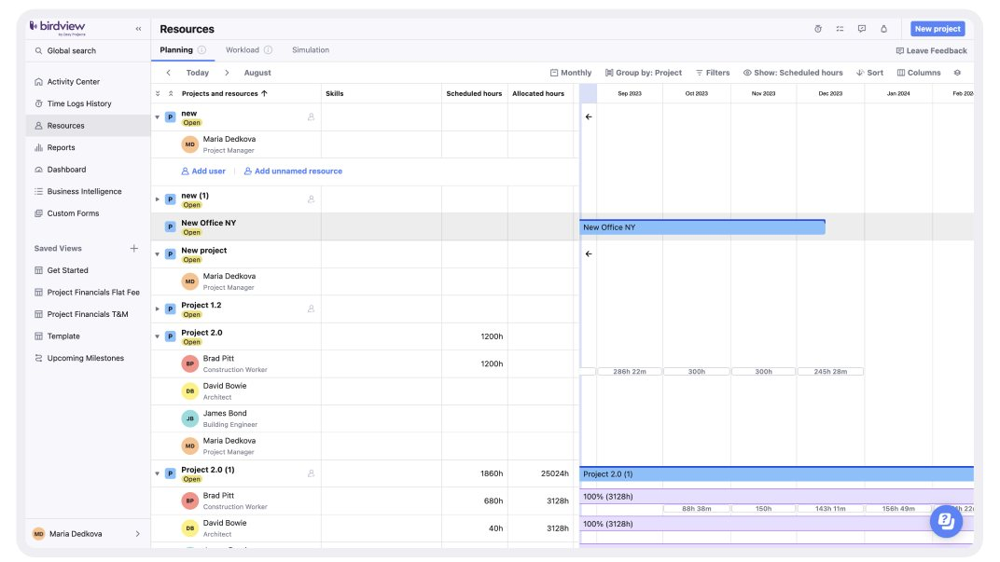
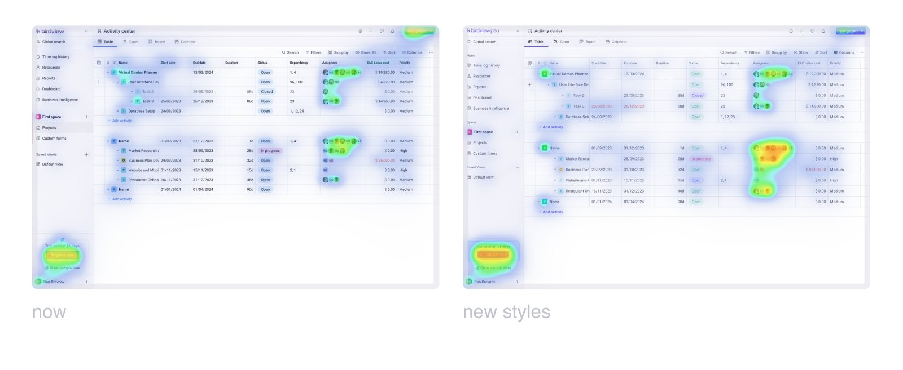
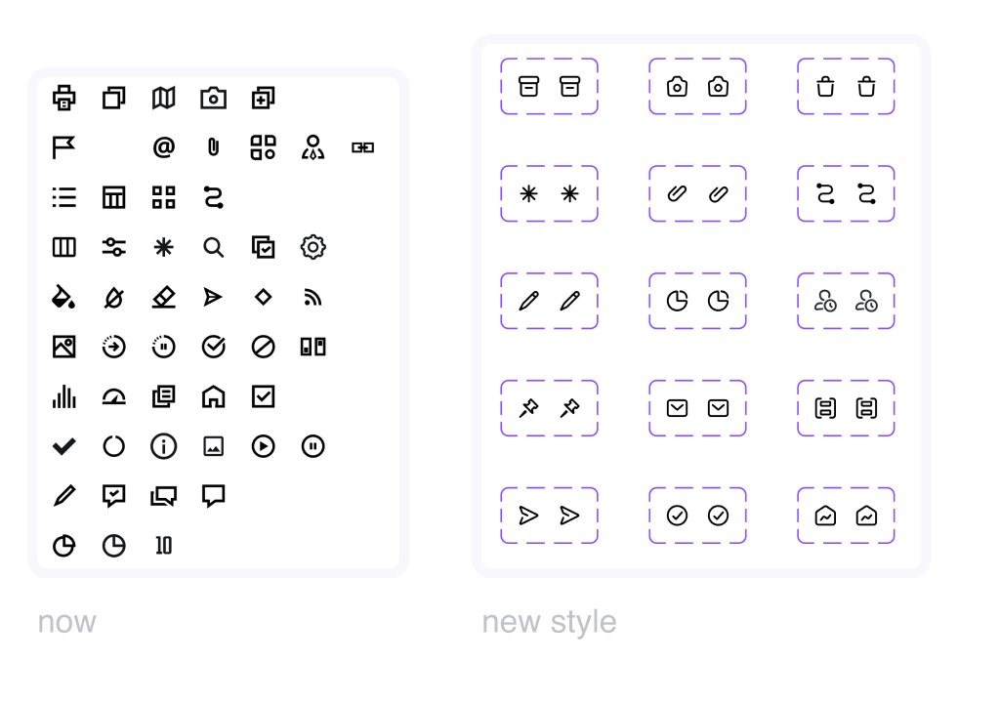
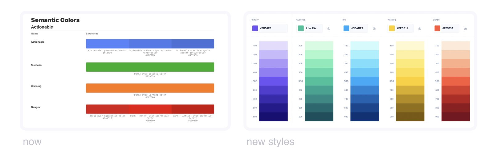
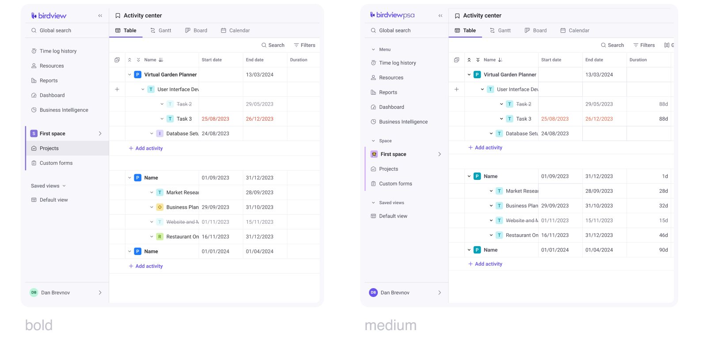
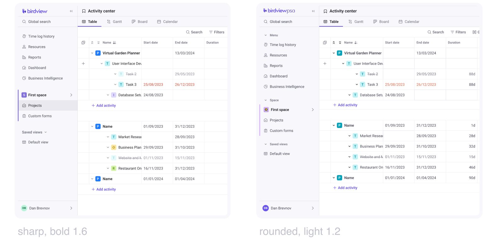
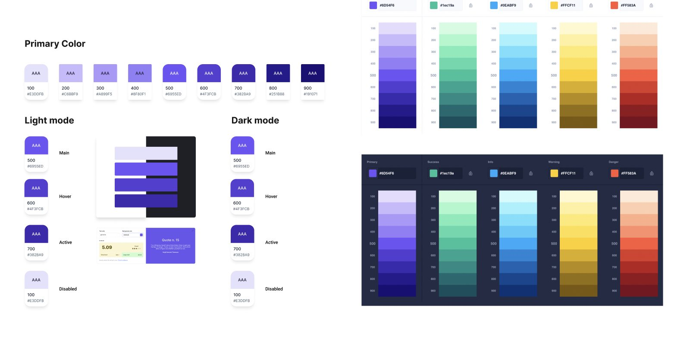
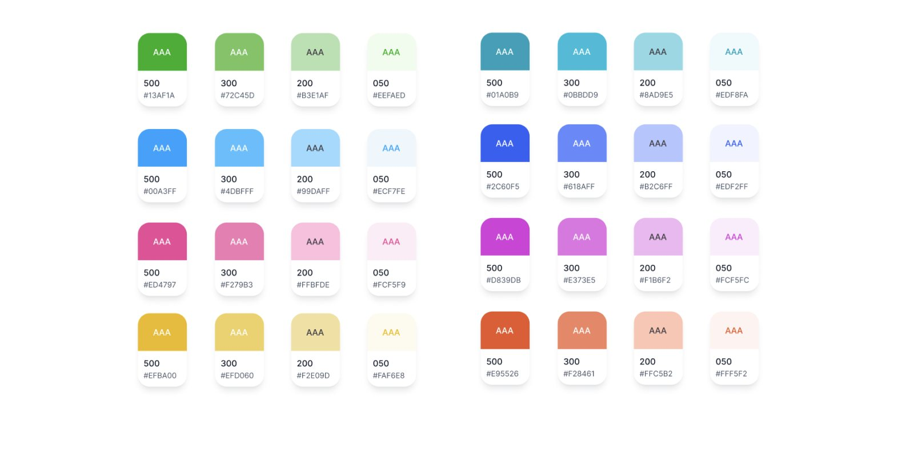
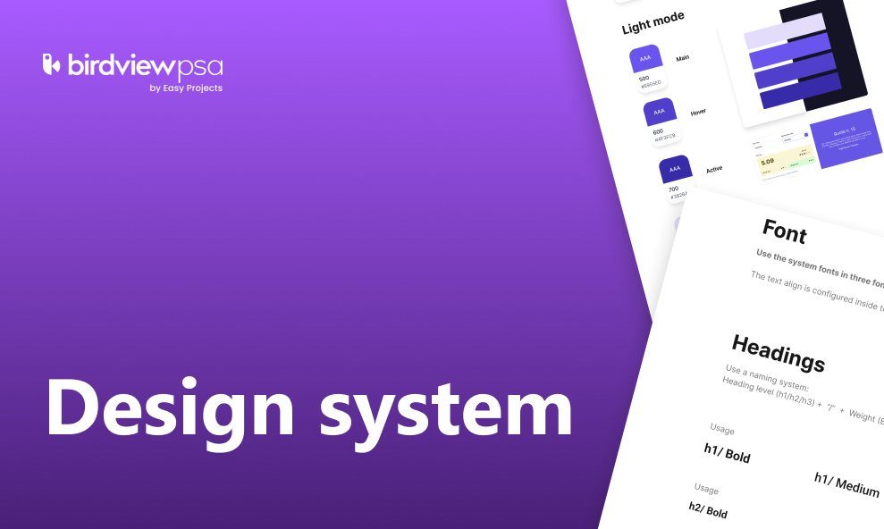
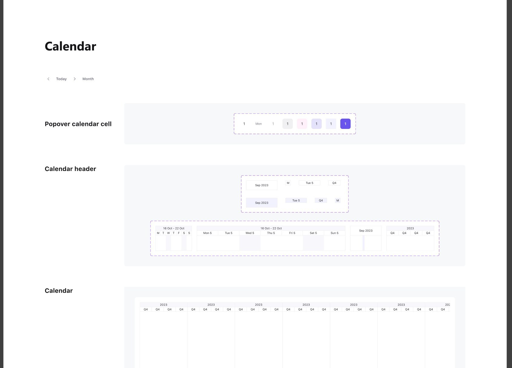

All cases Все кейсы Case study · B2B SaaS · 2023 — 2024 Кейс · B2B SaaS · 2023 — 2024
Resource planning Планирование ресурсов Who is busy, who is free, and how to fix it — on one screen. Кто занят, кто свободен и как это исправить — на одном экране.
Role Роль Product designer Продуктовый дизайнер Period Период 2023 — 2024 Team Команда PM, engineers, QA PM, разработка, QA Platform Платформа Web, B2B SaaS Веб, B2B SaaS
birdviewpsa.com
01 Overview Коротко
The case in one minute Кейс за минуту
Product Продукт
Birdview PSA: projects, people and finances in one place Birdview PSA: проекты, люди и финансы в одном месте
Problem Проблема
Overload and idle time were invisible Перегруз и простои было не видно
My part Моя роль
The module end to end, research to components Модуль целиком, от исследования до компонентов
Impact Результат
Sales-assisted conversion 1.67% → 2.78% Конверсия sales-assisted 1.67% → 2.78%
02 Context and goal Контекст и цель
Why the module was needed Зачем понадобился модуль
Give managers control over resources at every level — from one specialist to the whole project. Дать менеджерам контроль над ресурсами на всех уровнях — от одного специалиста до всего проекта.
Resource manager Ресурсный менеджер
Balances people across projects Распределяет людей по проектам
Project manager Проектный менеджер
Needs the right roles in time Нужны нужные роли вовремя
Leadership Руководство
Wants capacity at a glance Хочет видеть ёмкость сразу
Specialist Специалист
Sees own load and bookings Видит свою загрузку и брони
Before: how planning looked До: как выглядело планирование The old Resources screen or the team spreadsheet Старый экран Resources или таблица команды
What was broken Что было не так One line: double bookings, idle people, late staffing — and the cost. Одна строка: двойные брони, простои, поздний стаффинг — и чего это стоило.
03 Design process Процесс
From research to release От исследования до релиза
01 Discover Исследование Audience and needs Аудитория и потребности Competitors Конкуренты Market trends Тренды рынка
02 Define Постановка Requirements with PM Требования с PM User flows Сценарии Design sprints Дизайн-спринты
03 Design Проектирование Concept Концепция Mockups Макеты Prototype Прототип
04 Validate Проверка User tests Тесты с пользователями Iterations Итерации Hand-off Передача в разработку
Competitor analysis Анализ конкурентов 4–6 planning tools compared Сравнение 4–6 инструментов
User flow Сценарий Open position → booked person Открытая позиция → бронь
Sprint sketches Скетчи со спринта 2–3 directions of the timeline 2–3 направления таймлайна
Before / after tests До / после тестов One screen, two versions Один экран, две версии
04 Key feature Главная фича
Resource planning Ресурсное планирование
Load at any scale Загрузка в любом масштабе Colour status Цветовой статус Priorities Приоритеты Position status Статусы позиций Candidate matching Подбор кандидатов Project proposals Предложения по проектам Generic and named Дженерик и сотрудники Filters and granularity Фильтры и гранулярность Requests and booking Заявки и бронь Load at a glance Загрузка одним взглядом Planning screen with normal / over / under colours Экран с цветами: норма / перегруз / недогруз
01
Colour first, numbers second Сначала цвет, потом цифры The state of the company reads before a single number. Состояние компании считывается раньше первой цифры.
02
Conflicts fixed in place Конфликты — на месте Two projects, one person: compare and rebalance without leaving. Два проекта, один человек: сравнить и перераспределить, не уходя.
Resolving a conflict Разрешение конфликта Positions and candidates Позиции и кандидаты Open / proposed / booked / filled + matched shortlist Открыта / предложена / забронирована / занята + шортлист
03
The shortlist comes to the role Шортлист приходит к роли Matched by role and skills; manual choice kept. Подбор по ролям и навыкам, ручной выбор остаётся.
04
One person, every project Один человек, все проекты Drill down: what they do and what a booking changes. Детали: чем занят и что изменит бронь.
Controlling one person's load Контроль загрузки одного человека Proposals and requests Предложения и заявки Proposal form + requests list with approve / book Форма предложения + список заявок с одобрением / бронью
05
Requests with a clear status Заявки с понятным статусом Send, approve, reject, book — in one list. Отправить, одобрить, отклонить, забронировать — в одном списке.
↗ Interactive prototype Интерактивный прототип
Try it yourself Попробуйте сами
05 Bonus · UI refresh Бонус · обновление UI
A calmer product Продукт спокойнее
What was wrong Что было не так

Loaded product → high cognitive load Перегруженный продукт → высокая когнитивная нагрузка 
Too many accents → scattered attention Много акцентов → рассеянное внимание 
Sharp shapes → formal, unfriendly Острые формы → формально и неприветливо 
No brand colours → no recognition Нет бренд-цветов → нет узнаваемости What we changed Что изменили

Fonts: bold → medium Шрифты: bold → medium 
Icons: sharp 1.6 → rounded 1.2 Иконки: острые 1.6 → скруглённые 1.2 
Brand + semantic colours, light and dark Бренд + семантика, светлая и тёмная 
One colour coding for every status Одно цветовое кодирование для всех статусов
06 Design system Дизайн-система
Built from parts, not screens Собрано из частей, а не экранов

Birdview design system Дизайн-система Birdview Colours Цвета Typography Типографика Icons Иконки Components Компоненты Layouts Лейауты Dark mode Тёмная тема Load cell: anatomy Ячейка: анатомия Hours, %, status colour Часы, %, цвет статуса
Load cell: states Ячейка: состояния Normal, over, under, empty, hover Норма, перегруз, недогруз, пусто, ховер
System feedback Уведомления Info, success, warning, error Инфо, успех, предупреждение, ошибка
Message board Комментарии Component + empty state Компонент + пустое состояние

Calendar component and its states Компонент календаря и его состояния
07 Results Результаты
A feature became a sales argument Фича стала аргументом продаж
Headline result Главный результат 100%
of new clients use the module новых клиентов используют модуль
12% enabled it in the feature lab включили на этапе feature lab
4% adoption across paid accounts adoption среди платных аккаунтов
10% feature retention retention фичи
1.67 → 2.78% sales-assisted → paid sales-assisted → платящие
08 Reflection Выводы
What I learned Что я вынесла
What worked Что сработало One or two lines. Одна-две строки.
What I would change Что сделала бы иначе One or two lines. Одна-две строки.
Have a complex product Есть сложный продукт,
Let's talk Давайте обсудим